A Primer in Post-Training Reasoning Data: What We Know About How It Works
这篇 primer 的核心判断是：post-training reasoning data 不是简单的 prompt-response pair，而是带 verifier、feedback、trajectory、lineage 和 release metadata 的证据对象。作者综合 150+ 公开研究和系统报告，给出一个用于归因 reasoning model 增益的审计框架。
研究动机：reasoning data 为什么需要重新命名为“证据对象”
论文起点很直接：o1-style test-time scaling 和 thinking models 让 post-training 成为 reasoning model 进步的主驱动之一，而 reasoning data 往往比 optimizer 细节更能解释成败。但公开文献分散在 dataset、RL recipes、reward models、benchmarks、frontier reports 里，导致很多报告只给出分数，无法回答“到底是哪一层数据对象改变了模型”。
被挑战的直觉
作者把常见误区列成 Table 1：long CoT 不等于 faithful reasoning，harder data 不必然更好，more data 不等于 coverage，clean success transcript 反而会删除 agent credit assignment 所需的 failures/retries/state diffs。
关键缺口
现有报告常把 optimizer、base model、prompt pool、teacher trace、verifier、inference budget 混在一起比较。没有统一字段时，分数提升可能来自数据、更强 teacher、更多 rollout、verifier 漏洞或 benchmark leakage。
论文贡献
它不是提出新算法，而是给出 attribution framework：把 reasoning-data item 拆成 task context、model behavior、feedback/verifier、metadata，并要求未来 release 报告可审计字段。
| 误区 | 论文给出的 takeaways | 未来报告必须披露的字段 |
|---|---|---|
| Long CoT means good reasoning | 长 trace 可能只是 rationalization、teacher style copying 或掩盖真实因果路径；质量要看 validity 和 grounding。 | trace source、process labels、execution context、localization tests、robustness checks。 |
| Harder data is better data | difficulty 是 base-relative：同一题可能对一个 base 不可达，对另一个刚好产生梯度，对第三个已经饱和。 | base model、sampling protocol、verifier、rollout count、temperature、pass-rate band、estimate date。 |
| More data means better coverage | coverage 是 recipe，不是 count；source mixture、filters、teachers、generators、leakage 和 lineage 决定继承了什么。 | source mixture、generator、teacher、filtering rule、split、decontamination status、lineage risks。 |
| A clean successful transcript is ideal | agent data 的 failures、retries、recoveries、state diffs 才是 credit assignment 的证据；清洗过的成功轨迹会删除关键分支。 | replayable episodes、states、actions、observations、failures、terminal predicates、scaffold metadata。 |
| Self-play removes curation | self-play 只是把 curation 移到 anchor：answer、interpreter、verifier、majority vote、archive 或 role split。 | anchor、selection rule、verifier、admissibility rule、replay policy、failure modes。 |
| The optimizer explains the gain | 同一个 RL scaffold 可能隐藏完全不同的 prompt pools、trace writers、substrates 和 verifiers。 | prompt source、trace author、search substrate、reward channel、scaffold、budget。 |
| Scaling means the model got better | 更高分数可能移动 ceiling、提高 efficiency 或改变 measurement surface；三者是不同 claim。 | unique data、reuse rate、training compute、inference budget、search topology、verifier refresh、evaluation protocol。 |
Table 1 重建：论文把这些“反直觉教训”作为阅读所有 reasoning-data release 的入口。
方法框架：从 verification contract 到 scaling attribution
这篇 primer 的“方法”是 taxonomy + audit ledger，而不是训练新模型。它先按 verification contract 定义 reasoning-data object，再按质量、构造与 scaling 三层字段解释为什么某个 data item 可用、可复现、可归因。
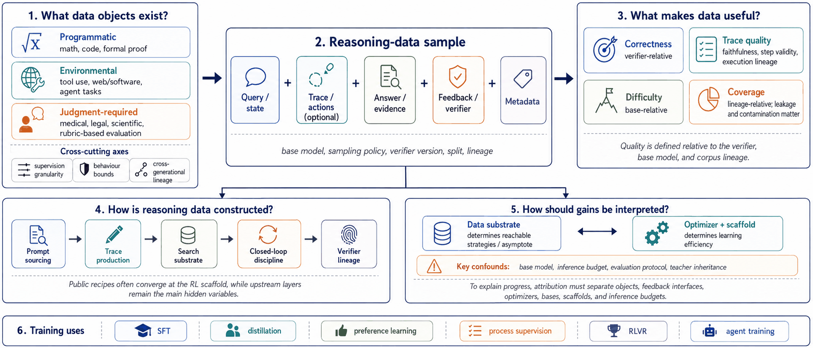
What objects exist?
不是按 domain 命名 data，而是按 feedback 可被怎样检查来命名：programmatic、environmental、judgment-required。
What makes data useful?
correctness verifier-relative，difficulty base-relative，trace quality trajectory-relative，coverage lineage-relative。
How is it built?
prompt sourcing、trace writing、search substrate、self-play anchor、reward/verifier 和 frontier pipeline 分别暴露不同 confound。
How do gains scale?
区分 data substrate 改变 reachable ceiling，optimizer/scaffold 改变 approach efficiency，measurement surface 改变可观察分数。
Programmatic verification
math、code、formal proof 等任务可以通过 answer normalization、code execution、proof-state checking 形成 scalable verifier。优势是低成本、可重复；风险是 false rejection、spurious reward 和 verifier gaming。
Environmental verification
tool、web、app、OS、repository tasks 通过 goals、actions、observations、state transitions 和 terminal predicates 给出 state-based success。优势是更接近 agent；风险是 transcript compression。
Judgment-required verification
medical、factuality、safety、rubric reward 等任务依赖 criteria、evidence、risk、provenance、judge traces 或 disagreement fields。judge 本身必须成为 data object。
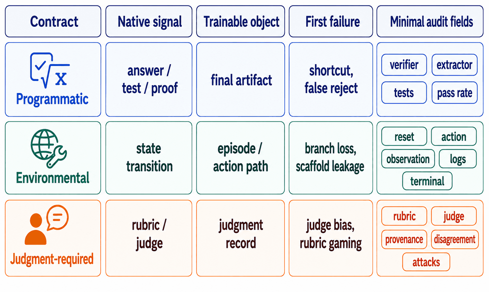
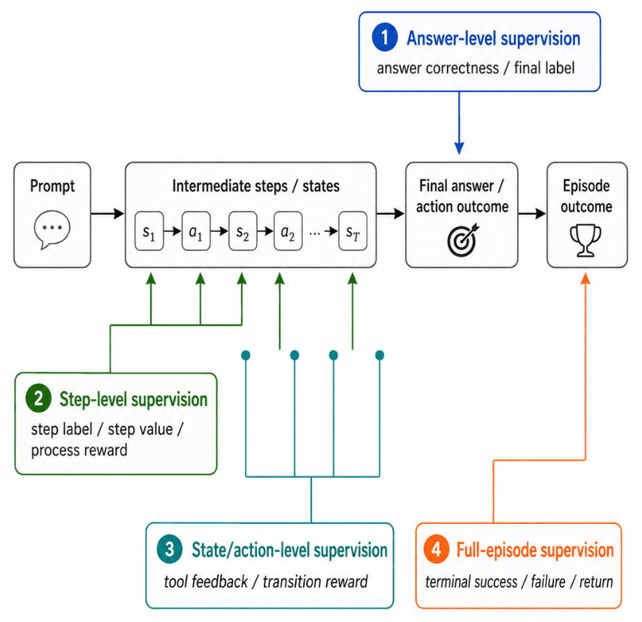
| 质量 claim | 相对对象 | 论文解释 | 必须记录 |
|---|---|---|---|
| Correctness | Verifier-relative | 正确性是 versioned verifier contract，不是 answer string；extractor、normalization、invalid-output handling 和 pass-rate filtering 都会改变训练样本。 | extractor、verifier version、filtering rule、known failure modes。 |
| Trace quality | Trajectory-relative | 可见 trace 只是 suggestive evidence，不证明 reasoning mechanism；有效 trace 应 locally valid、task-relevant、grounded。 | trace author、process labels、execution lineage、localization/sensitivity tests。 |
| Difficulty | Base-relative | difficulty 是 item-model-sampling relation；同一 item 的 usefulness 随 base、temperature、rollout count 和 verifier 改变。 | base checkpoint、prompt format、sampling protocol、pass-rate band、estimate date。 |
| Coverage | Lineage-relative | coverage 由 source mixture、filters、teachers、generators、leakage 与 split 决定；synthetic flywheel 可能放大 hidden traits 或 narrowing。 | generator、filter、split、teacher、verifier of record、decontamination、inheritance risk。 |
Figure 4 的文字化重建：不同质量 claim 需要不同证据字段，不能由“数据量”或“最终准确率”统一替代。
Scaling 读法：ceiling 与 efficiency 分离
作者引用 Khatri et al. 和 Tan et al. 的形式作为阅读 scaling claim 的工具，而不是声明一个通用定律：
$$R(C)=R_0+\frac{A-R_0}{1+(C_{\mathrm{mid}}/C)^B}$$ $$\log L(N,C)=E(N)-k(N)\log C$$这里 $A$ 表示 reachable ceiling，$B$ 或 $k(N)$ 表示 approach efficiency。一个 benchmark gain 可能是 ceiling 变高、approach 变快，或 measurement surface 被 inference budget/search topology 改写。
Data reuse 不是预处理细节
$$D_{\mathrm{total}} = D_{\mathrm{unique}} \times \tau$$论文借 Tan et al. 的分解强调：unique data 与 reuse rate 共同构成 scaling surface。小数据集在 base policy 已支持技能时可能足够；大数据集在 tail coverage、multi-base、multi-verifier 或 multi-domain 时更重要。
证据结构：survey 的“实验设计”与纳入边界
这不是实验论文，没有统一训练 run、baseline 或 leaderboard。它的 evidence design 是 question-driven synthesis：纳入公开工作时，要求至少暴露 reasoning post-training data 的一个关键组件，例如 data object、verifier、trace source、reward channel、environment、scaling rule 或 release metadata。
| Source type | 纳入条件 | 用于支持的 claim |
|---|---|---|
| Model report | 暴露 post-training recipe、optimizer、verifier 或 release budget。 | construction and scaling context；不单独用于 data-causal attribution。 |
| Dataset / benchmark | 暴露 task source、split、verifier、contamination audit 或 evaluation rule。 | data-object taxonomy 与 evaluation surface。 |
| Verifier / reward work | 暴露 checker、PRM、judge、rubric 或 failure mode。 | quality support 与 audit fields。 |
| Agent / environment work | 暴露 state、action、observation、terminal predicate 或 replay log。 | environmental verification。 |
| Scaling study | 暴露 compute、reuse、inference budget 或 asymptote-efficiency claim。 | scaling attribution。 |
Appendix Table A1 重建：作者明确排除只报告 leaderboard gain、但不描述数据对象或反馈接口的工作。
主文覆盖
正文按四个问题组织：Section 2 定义 verification contracts；Section 3 讨论 data quality；Section 4 展开 construction ledger；Section 5 讨论 scaling、data uniqueness、inference-time compute 和 verifier lineage。
附录补充
附录给出 inclusion lens、source coverage clusters、cross-cutting axes、construction schematics、scaling views、agent trajectory audit fields、source placement guide 和 AI assistance disclosure。
| Construction layer | Attribution handle | 主要 trainable/audit 字段 | 隐藏 confound |
|---|---|---|---|
| Prompt sourcing | problem support / pass-rate band | Q 是主字段，V 和 L 是 audit 字段。 | 题源、过滤器、base-conditioned difficulty 和泄漏会被“domain/count”掩盖。 |
| Trace writing | inherited reasoning style | T 是主字段，Q、V、L 是 audit 字段。 | teacher traces 可能传递 decomposition style、formatting、stopping behavior 和 uncertainty expression。 |
| Search substrate | exploration and replayability | E 和 V 是主字段，Q、T、L 是 audit 字段。 | 成功 transcript 会删除 failed branches、recoveries、state diffs。 |
| Self-play anchor | where curation re-enters | Q、V、L 是主字段，T 和 E 是 audit 字段。 | anchor 决定哪些 generated behaviors 进入训练，self-play 不是无监督。 |
| Reward / verifier | what counts as success | V 与 L 是核心字段，其余是 audit 字段。 | formal checker、PRM、rubric judge 和 implicit selector 有不同 failure surface。 |
| Frontier pipeline | where reports appear to converge | Q/T/E/V/L 全部需要披露。 | 不同系统可能在 visible RL scaffold 上相似，但 upstream data object 完全不同。 |
Table 2 重建：Q = prompt/source；T = trace or teacher；E = environment/substrate；V = verifier/reward；L = lineage。
核心结论：如何读 reasoning-data release 与 scaling claim
论文的“结果”是一套审稿/复现用的判断规则。最重要的结论是：不要把 optimizer 当作最终比较单位；任何 reported gain 都要回到 prompt support、trace teacher、substrate、anchor、verifier、scaffold 与 inference budget。
结论 1：verifier-bearing sample 是最小可解释单元
prompt-response pair 太薄。可解释样本必须包括 query/state、trace/actions、answer/evidence、feedback/verifier 和 metadata，尤其是 base model、sampling policy、verifier version、split 和 lineage。
结论 2：quality claim 必须指定相对对象
correctness 相对 verifier，difficulty 相对 base，trace quality 相对 trajectory，coverage 相对 lineage。任何缺少这些相对对象的“高质量数据”说法都不可审计。
结论 3：agent data 应该发布 replayable episodes
环境任务的 trainable signal 常在 failed actions、state diffs、recoveries 和 hidden predicates 中；只发布 clean success transcript 会删掉 credit assignment 的证据。
结论 4：scaling report 要拆成三种 claim
score 提升可能来自 data substrate 提高 ceiling、optimizer/scaffold 提高 efficiency，或者 inference-time compute/search topology 改变 observable。三者不能混为“model got better”。
| Scaling knob | 直接影响 | 必须披露的 release fields | 解释风险 |
|---|---|---|---|
| Prompt / filter pool | 主要影响 reachable ceiling $A$，也 conditioning efficiency。 | source、filter、pass-rate band。 | 看似数据更大，实际可能只是 base 更匹配或过滤更激进。 |
| Loss / clipping / entropy | 主要影响 $B$ 或 $k$ 这类 approach efficiency。 | objective、KL、batch、weighting。 | optimizer gain 可能被 prompt pool 和 verifier change 混淆。 |
| Reuse / epochs | 主要影响 efficiency。 | $D_{\mathrm{unique}}$、$\tau$、replay rule。 | 没有 unique/reuse 分解时，数据规模报告不可比较。 |
| Search / TTT topology | 主要改变 efficiency 与 measurement surface。 | budget rule、selector、verifier、metric。 | pass@N、parallel refinement、test-time training 不是同一个 observable。 |
| Environment substrate | 主要影响 ceiling，也 conditioning efficiency。 | state、actions、replay、terminal check。 | 环境变更可能被误读为模型能力提升。 |
| Verifier refresh | 同时影响 ceiling 与 efficiency。 | verifier card、attack tests、refresh log。 | verifier 变强、变脆或被 hack 都会改变训练信号。 |
Table 3 重建：论文用 $A$ 表示 reachable ceiling，用 $B/k$ 表示 approach efficiency。
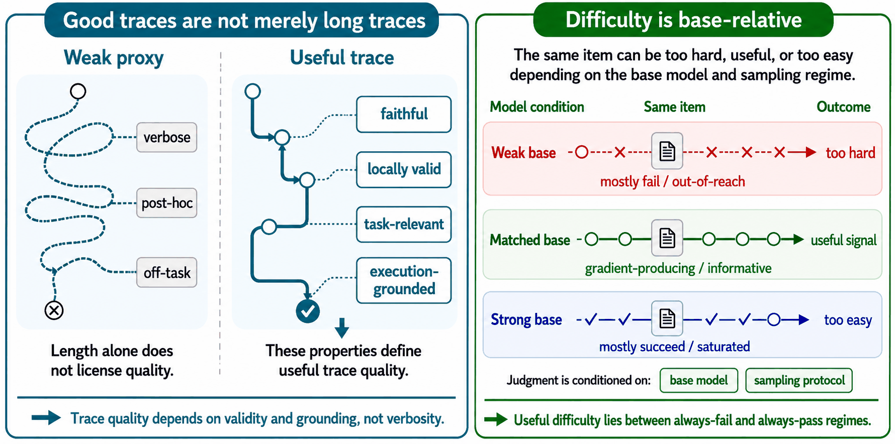
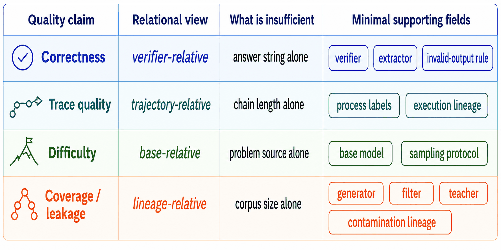
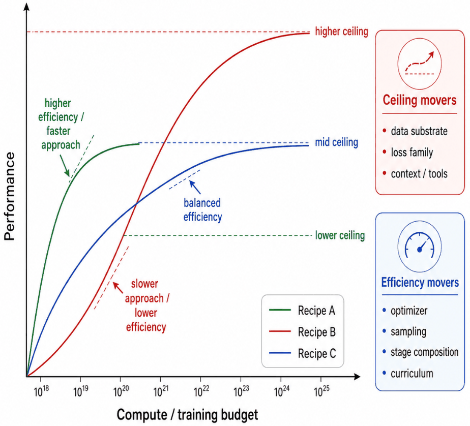
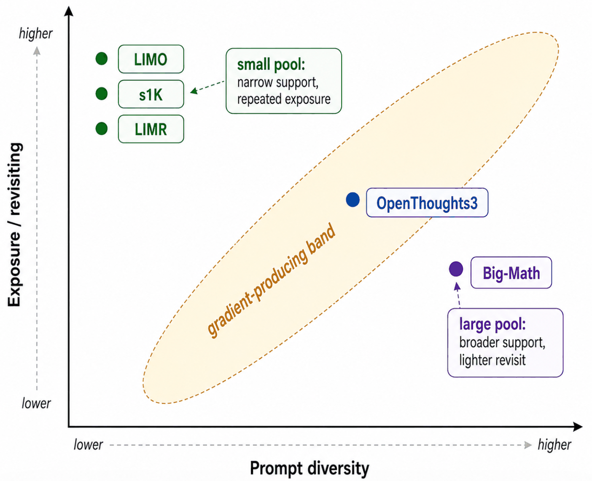
Figure / Table 导航
抽取工具成功获得正文 Figure 1-8 与附录 Figure A1-A6。表格内容主要来自 PDF 文本抽取并在本页重建；长表 A2/A4 作为附录导航记录，没有完整复制所有参考文献细节。
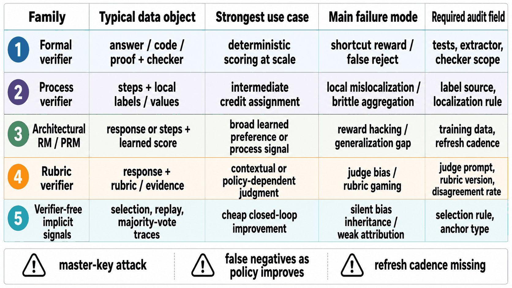
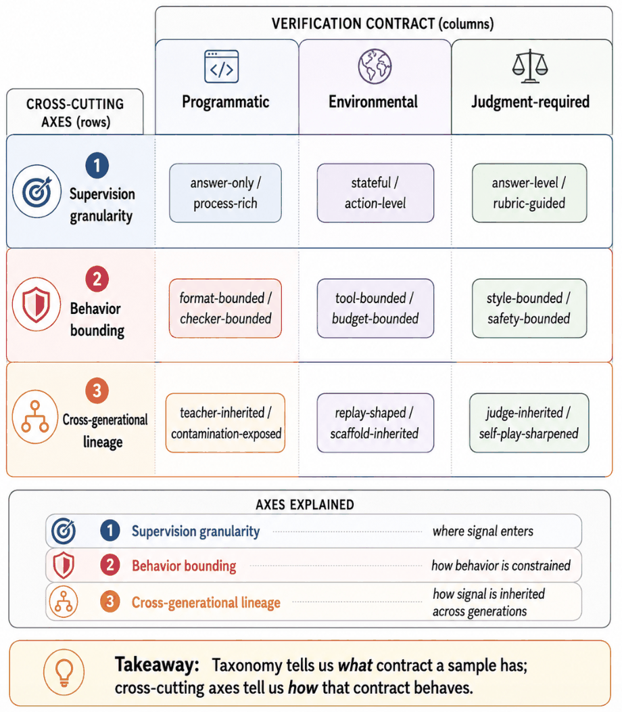
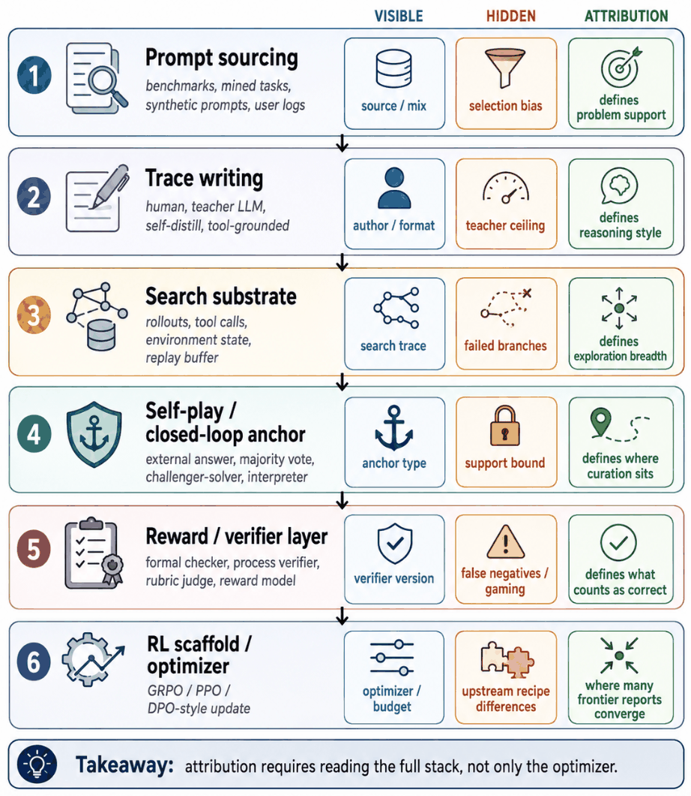
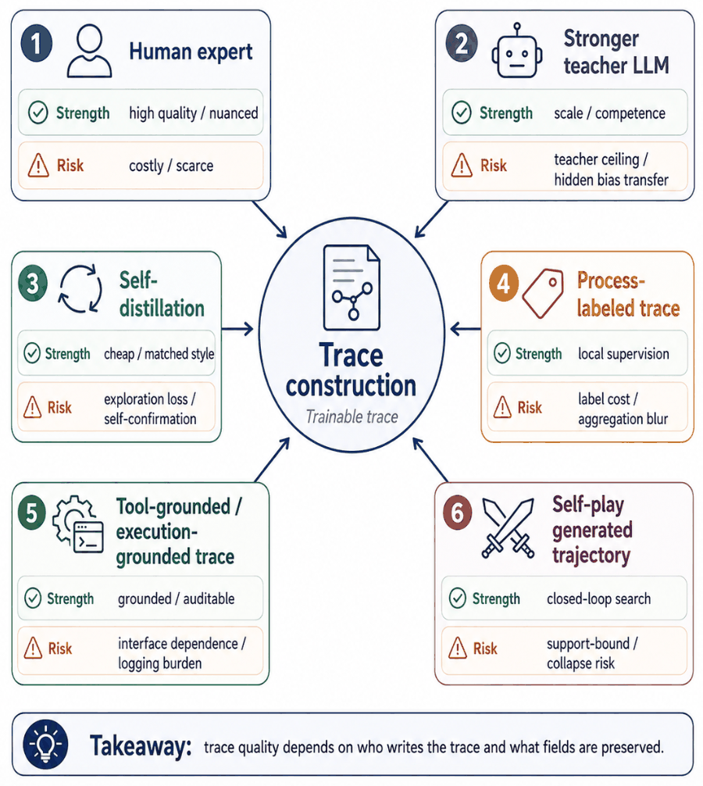
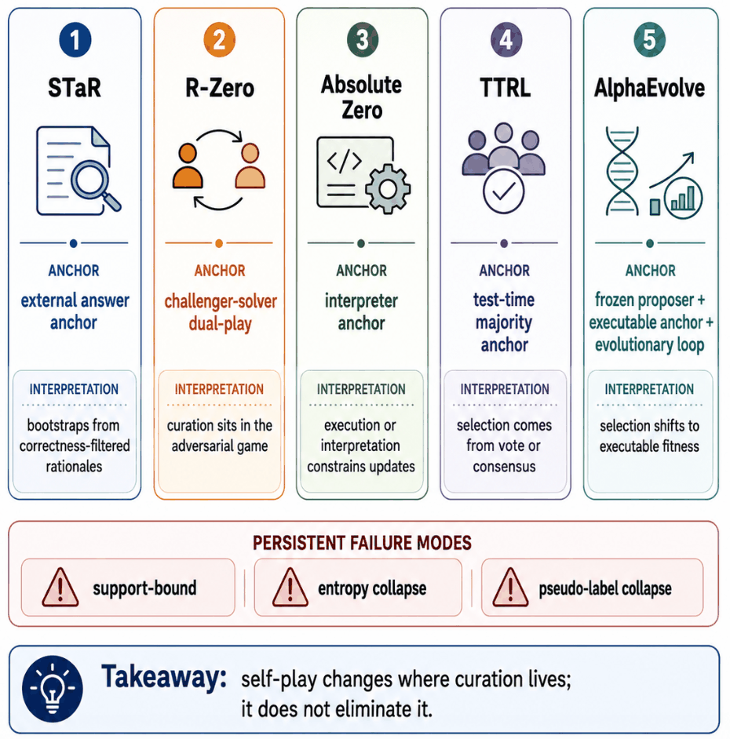
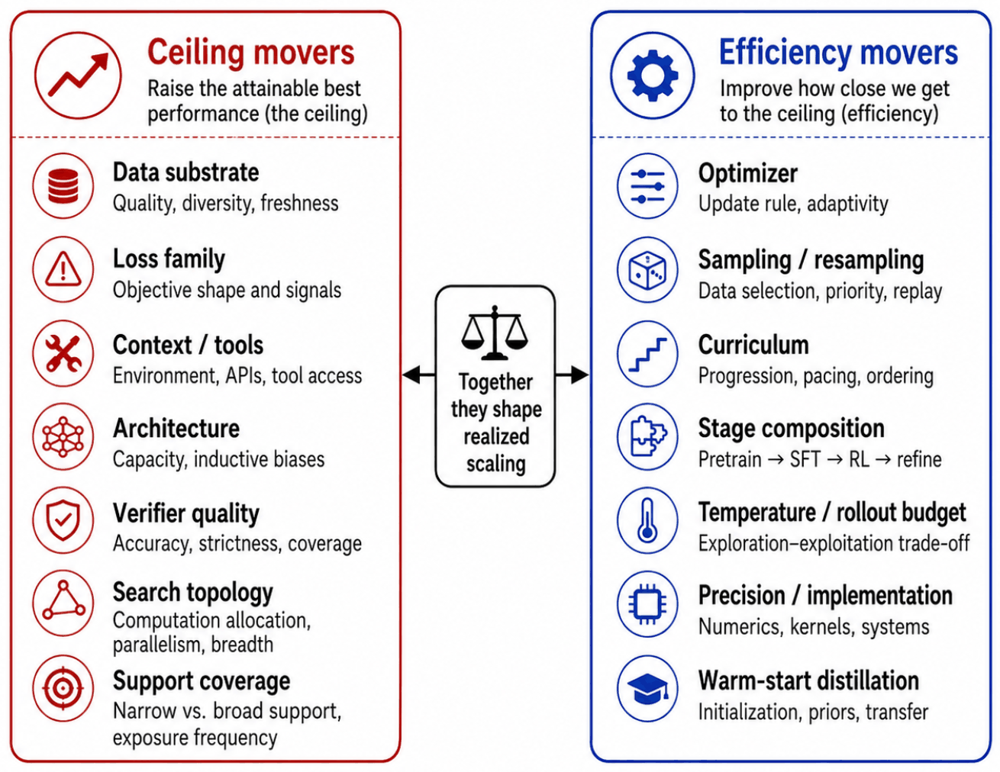
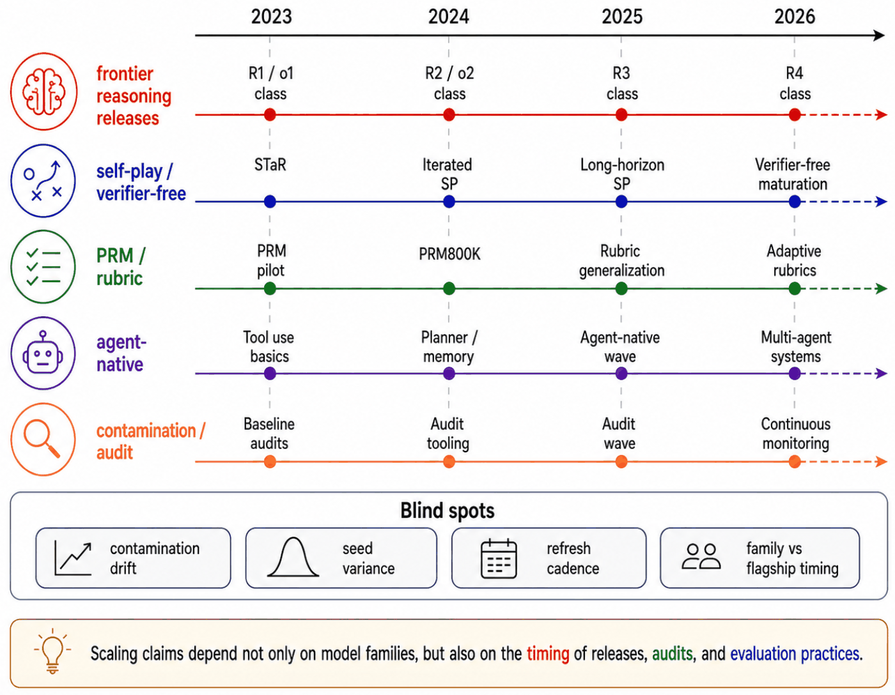
复现清单：这篇 primer 能复现什么，不能复现什么
作为 survey/primer，论文没有提供可运行训练代码或新 benchmark 数字。更合理的复现目标是复核 PDF、图表、纳入标准、source-placement logic，并把它转化为自己的 reasoning-data release checklist。
可直接复核
- arXiv v1 PDF，发布于 2026-06-01，共 22 页。
- 项目仓库：Awesome-LLM-Reasoning-Data。
- 正文 8 张主图与附录 6 张补充图均已抽取为本地图片。
- Table 1、Table 2、Table 3、Table A1、Table A3 可由文本抽取重建。
- 附录声明主文是 question-driven synthesis，不是 formal meta-analysis。
不可严格复现
- 论文没有重新训练模型，因此不存在统一的 dataset/baseline/metric/hyperparameter 表。
- 150+ source 的完整结构化筛选表未在 PDF 中给出；Table A2 是 coverage clusters，而非逐条机器可审计 bibliography dataset。
- closed pipelines、proprietary data mixtures、undocumented release practices 被作者明确列为 evidence limitation。
- 作者没有 independently re-run training recipes、audit contamination 或 validate every verifier。
| 若要发布自己的 reasoning-data release | 最低应记录字段 | 为什么 |
|---|---|---|
| Prompt / answer data | source、filter、split、base pass-rate band、sampling temperature、rollout count、verifier version。 | 保证 difficulty 与 correctness 可被对应到 base 和 verifier，而不是只报 domain/count。 |
| CoT / process data | trace author、teacher model、process labels、execution context、localization tests、robustness checks。 | 防止 long CoT 被误读为 faithful reasoning。 |
| RLVR / GRPO-style runs | prompt pool、group size、reward rule、invalid-output handling、KL/objective、batch、reuse rate、unique data。 | 把 optimizer efficiency 与数据 substrate 分开。 |
| Agent / tool trajectories | initial state、action schema、observations、state diffs、failures/retries、terminal predicate、scaffold metadata、budget。 | 发布 replayable episodes，而不是清洗后的成功 transcript。 |
| Self-play / self-evolution | anchor、selection rule、admissibility rule、replay policy、archive、verifier refresh、failure modes。 | self-play 的核心不是“无监督”，而是 curation anchor 可审计。 |
| Evaluation / benchmark | evaluation protocol、inference budget、search topology、seed、decontamination audit、release timestamp。 | 避免把 measurement change 误读成 model capability change。 |
| Agent trajectory audit field | 应发布内容 | 作用 |
|---|---|---|
| Task state | initial state、files、UI state、repository snapshot、environment version。 | 决定 episode 是否可 reset 和 replay。 |
| Goal and constraints | user goal、hidden tests、policy constraints、allowed/disallowed actions。 | 区分 task success 与 scaffold compliance。 |
| Action schema | tool/API schema、action grammar、argument format、timeout 和 permission rules。 | 定义模型实际可用 action space。 |
| Observations | tool outputs、browser/app observations、terminal logs、screenshots、error messages。 | 暴露 episode 中模型真正可见的反馈。 |
| State diffs | file changes、patches、database changes、UI transitions、environment deltas。 | 让 credit assignment 和 recovery behavior 可检查。 |
| Failures and retries | invalid actions、failed calls、rejected patches、recovery attempts、backtracking。 | 保留 cleaned SFT traces 常删除的分支。 |
| Terminal predicate | success condition、unit tests、grader、judge、environment predicate。 | 定义 completion 或 reward。 |
| Scaffold metadata | planner、tool wrapper、memory、prompt template、agent loop、stopping rule。 | 避免把 scaffold change 误判为 model change。 |
| Budget and sampling | rollout count、token budget、time limit、temperature、pass@k or selector。 | 使 inference-time compute 可比较。 |
| Lineage and split | generator、teacher、verifier version、filtering rule、split、contamination audit。 | 支持跨 generation 和 release 的 attribution。 |
Appendix Table A3 重建：这是对 agent、tool use、self-evolution 和 replay 数据最可操作的部分。
Reviewer Critique
优点
- 把 reasoning-data release 从“数据集列表”提升到 attribution interface，直接服务 post-training recipe 审稿和复现。
- 三类 verification contract 把 math/code、agent/environment、medical/safety/rubric 等看似不同的任务放到同一个 feedback 框架下。
- Table 1 的反直觉教训很实用，能快速识别 data release 中被省略的关键字段。
- 对 scaling 的 ceiling/efficiency/measurement surface 分解，能缓解 RLVR、distillation、test-time compute 讨论中的概念混淆。
- Appendix A3 给 agent trajectory release 提供了非常具体的 audit fields，适合直接改造成实验日志 schema。
不足
- 作者明确说不是 formal meta-analysis；没有完整检索 query、数据库、筛选流程、inter-rater agreement 或机器可复查的 source table。
- 150+ studies 的综合主要是概念归纳，缺少定量 evidence strength 分级；读者需要自己判断某个结论来自 peer-reviewed paper、arXiv preprint 还是 system report。
- 论文没有提供 checklist 的 JSON schema 或 benchmark card 模板，实际落地到 release 工程还需要二次结构化。
- 对 multimodal、multilingual、co-evolving verifier-generator 的讨论主要放在 limitation 里，尚未展开成完整 taxonomy。
潜在失败模式
如果研究者只按论文框架补字段，但不做 verifier attack、contamination audit 或 replay test，release 仍可能“看起来可审计”但实际不可复现。
隐藏 confound
frontier reports 常把 data mixture、teacher、scaffold、budget 和 optimizer 同时改变；即使按本框架阅读，也可能因为闭源细节缺失而无法做 causal attribution。
伦理与安全
privacy-bearing traces、expert rubrics、agent actions、高成本 RL pipeline 与 verifier hacking 都要求 release 同时报告 license、provenance、annotator welfare、safety boundaries 和 compute disclosure。
对我的研究方向的启发
1. RLVR 数据集要从 answer verifier 升级到 release card
数学/代码 RLVR 不应只报 final answer verifier。需要把 extractor、invalid-output handling、pass-rate band、group sampling、verifier version 和 attack tests 放进数据 card。
2. Agent replay 比成功率更接近训练信号
对 tool use、SWE、browser、GUI agent，最有价值的不是 clean transcript，而是 failed calls、state diffs、recoveries、terminal predicate 和 scaffold metadata。replay buffer 应成为数据 release 的一等对象。
3. Self-evolution 的关键是 anchor diversity
self-play 不会取消人工/规则 curation，只会把 curation 移到 anchor。研究 questioner-solver、archive replay、majority vote 或 interpreter feedback 时，要明确 anchor 的可靠性与覆盖边界。
4. Diversity 不能只按题面去重
coverage 是 source mixture、teacher lineage、verifier failure surface 和 base-conditioned active band 的函数。数据多样性应同时测 prompt、trace author、verifier、difficulty band 和 lineage。
5. Evaluation 要报告 measurement surface
pass@N、test-time training、parallel refinement、long-context search、Markovian chunking 和 tool budget 不是同一种 observable。比较前要把 inference budget 与 search topology 固定或单独报告。
6. 论文可直接转成实验日志 schema
把 Table A3 做成 agent trajectory logging schema，把 Table 2/3 做成 post-training run card，可以让 RLVR/agent/self-evolution 实验更容易被审稿人追踪归因。
一句话总结
这篇 primer 最值得带走的不是某个新 benchmark 数字，而是一个审计习惯：每次看到 reasoning model 分数提升，都先问“data object、verifier、base、lineage、scaffold、budget 中到底哪个变了”。